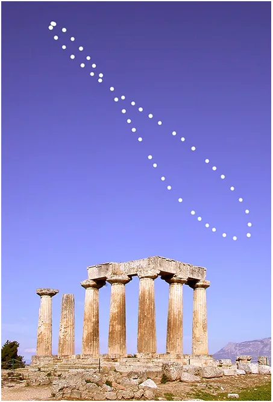
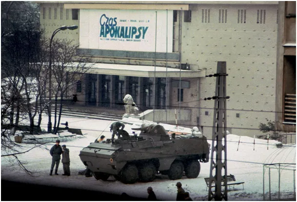

Taniec Słońca na niebie.
13 grudnia to w pamięci Polaków wyjątkowy dzień. Armia wystąpiła przeciw swojemu narodowi, gdy zimowe wieczory są najdłuższe, w wojsku astronomia to ważny kawałek wiedzy. Mimo, że astronomiczna zima nadejdzie 21 grudnia o 22:48 to zachody Słońca już od jutra będą coraz późniejsze.

Dziś w Warszawie to 15:32 a 22 grudnia Słońce zajdzie o 15:35 a ostatniego dnia roku o 15:42. Ziemia wykonuje ruch wirowy w 24 h, ale też krąży po elipsie wokół Słońca a oś obrotu własnego jest mocno pochylona. Z tego powodu pozycja Słońca na niebie o tej samej godzinie jest różna i to nie tylko mierząc jego wysokość nad horyzontem. Na ilustracji pozycja Słońca w południe w ciągu całego roku, punkty to tydzień po tygodniu. Tak właśnie Słońce tańczy na niebie a nasze intuicje o tym, że w południe powinno być dokładnie na południu są błędne.

Poranki będą nadal coraz późniejsze, aby wyrównać rachunki, ale już od 22 grudnia długość dnia zacznie się wydłużać. Zatem od jutra wieczory na plus!
Paweł Klimczewski